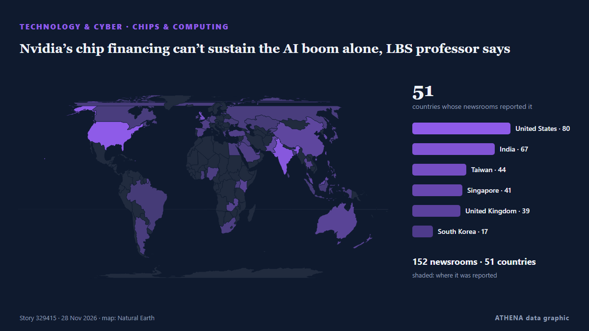

Τεχνολογία, ΤΝ & Κυβερνοασφάλεια
ΧορηγούμενοΠαρουσιάζεται από  Cybernetics and Artificial Intelligence Lab Welcome to the Cybernetics and Artificial Intelligence Laboratory, established at the Department of Business Administration of the National and Kapodistrian University of Athens. The lab is headed by Professor Dimitrios Thomakos. The lab aims to do research that can be published in top venues. Our research uses tools and methods of Artificial Intelligence, and lies in the following areas: - Forecasting - Decision making - Cyber security - Finance We are always looking forward to collaborating with exceptional students!
Cybernetics and Artificial Intelligence Lab Welcome to the Cybernetics and Artificial Intelligence Laboratory, established at the Department of Business Administration of the National and Kapodistrian University of Athens. The lab is headed by Professor Dimitrios Thomakos. The lab aims to do research that can be published in top venues. Our research uses tools and methods of Artificial Intelligence, and lies in the following areas: - Forecasting - Decision making - Cyber security - Finance We are always looking forward to collaborating with exceptional students!
Οι τίτλοι των ειδήσεων παρουσιάζονται στα αγγλικά, όπως δημοσιεύτηκαν.

Επεξεργαστές & υπολογιστικήNvidia’s chip financing can’t sustain the AI boom alone, LBS professor says
Nvidia’s deals to finance demand for its own chips can get data centres built, but only steady customer spending can justify the next ones. από The Next Web
| 15 Νοε | 44 |
|---|---|
| 16 Νοε | 119 |
| 17 Νοε | 105 |
| 18 Νοε | 105 |
| 19 Νοε | 105 |
| 20 Νοε | 65 |
| 21 Νοε | 30 |
| 22 Νοε | 45 |
| 23 Νοε | 90 |
| 24 Νοε | 77 |
| 25 Νοε | 82 |
| 26 Νοε | 57 |
| 27 Νοε | 39 |
| 28 Νοε | 12 |
Hera reveals stadium-sized asteroid crater from spacecraft impact
Arriving at the site of humankind's first planetary defense experiment, the European Space Agency's Hera mission has found a miniature world of surprises. από Phys.org
AI data centers in space: Millions of satellites and so many unknowns
SpaceX is seeking approval to launch a million satellites into orbit to build AI data centers in space. από DW English
Musk Says Google Is Interested in Renting More Computing Capacity from SpaceX
SpaceX's Google cloud deal will bring in $920 million monthly from October 2026 to June 2029. από Express Tribune
Hackers breach US Air Force flagship Cloud One computing platform
Currently unknown what the full scope of intrusion is, the hackers identity, whether any data has been stolen. από Express Tribune
Belgium orders Google to halt data center work over missing permit
BRUSSELS: Belgian authorities have ordered Google to suspend construction of a data center in the south of the country because of a lack of proper planning permission, a regional official said Friday. από Arab News
Taiwan holds local elections under Beijing's watchful gaze
Taiwan is electing local leaders across 22 cities and counties on Saturday amid accusations by Taiwanese authorities of attempts by China to interfere and sow distrust in the island-nation’s… από France 24 English
GTA VI launch sparks 400% surge in UK sales of physical games, data shows
The blockbuster release on November 19 sparked a resurgence in demand among gamers for physical copies. από Evening Standard (London)
Satellite maps reveal sinking land could worsen flooding across Africa's coastal cities by 2050
Sinking land is widespread across major African coastal cities, according to a new Virginia Tech–led study published Nov. από Phys.org
Mnangagwa Defends Zimbabwe Economy & Offers to Pay Journalist’s Visit
The Zimbabwean leader is in Kenya for high-level engagements expected to strengthen diplomatic relations and expand trade and investment cooperation between Nairobi and Harare. από Capital FM
Musk pledges two SpaceX shares for every US child
Elon Musk plans to gift every child in the United States two SpaceX shares, as he attempts to build public support for his satellite and AI businesses during a period of intense pu... από Oman Observer
AI financial services trigger regulation warning from UK watchdog
Technology companies must consider whether their AI agents are offering regulated financial services and engage with regulators if they are, Britain’s financial watchdog said on Tuesday. από Insurance Journal
Dmitriev: Russian AI helps us prepare for negotiations
Russian Direct Investment Fund CEO and diplomat Kirill Dmitriev stated on Friday that Russian artificial intelligence (AI) models can help officials prepare for negotiations. από AzerNews
Netherlands plans to fight rollout of proposed US curbs on ASML
The Dutch government has renewed its criticism of a U.S. από NL Times
Lululemon founder makes 'egregious' remarks about women at Calgary leadership forum
CBC News has confirmed with two attendees that Chip Wilson's comments included that women aren't having as many children as men want, that birth control is crucial to women's professional development… από CBC News (alternative feed)
Chief Minister inaugurates care home for elderly men
Prime Minister Dr. Harini Amarasuriya visited the Victoria Elderly Care Home in Rajagiriya on the morning of 20th of November. από The Island
FIFA says it has been victim of a cyberattack accessing ‘personal and business information’
FIFA was the victim of a cyberattack that saw hackers gain access to what soccer’s world governing body describes as a “limited set of personal and business information," it said Thursday. από CBC News
1Password customer data, source code taken in GitHub breach
1Password says customer vault data, the items in them, and the keys that protect them are safe and unaffected as the platform does not have access to user passwords or secret keys. από Rappler
SAP weighs cutting at least 10,000 positions in AI restructuring
SAP is weighing at least 10,000 job cuts as it reshapes its software business around AI, with product, engineering and sales among the departments under review. από Business Standard
Bitcoin price drops below $59K as Anthropic joins tech stock rebound
Bitcoin price volatility returned at the Wall Street open as BTC/USD dropped to local lows of $58,700 while stocks and gold headed higher. από Cointelegraph
France’s far-right Le Pen backs protege over antisemitism allegations
Far-right leader Jordan Bardella allegedly made antisemitic remarks as a teenager, which he denies. από Free Malaysia Today
U.S. approves SpaceX plan to deploy 1 million satellites for data centres in space
The Federal Communications Commission (FCC) is authorizing Elon Musk's SpaceX to deploy a constellation of one million satellites for data centres in space, the agency said on Wednesday. από CBC News (alternative feed)
Global news agency AFP reports cyberattack, shuts down content platform
France's cybersecurity chief urges collective action to combat unprecedented threat levels in the nation. από Al Jazeera English
Fifa confirms internal data stolen in cyber attack
A person with direct knowledge of the matter told Reuters that no files from the abandoned FIFA Forward Enterprise project were accessed. από Citizen Digital
X finally gets parental controls after 20 years
Elon Musk's social network X has finally added parental controls for teenagers, giving parents and guardians a way to manage what their kids see on the platform. από TechCrunch
For China, genocide ruling against Myanmar is a diplomatic dilemma
Beijing is a close strategic partner and has substantial economic interests in the Rakhine state where the atrocities against the Rohingya ocurred. από Scroll.in
Apple pulls MiniMax AI chatbot from App Store over child safety concerns
Talkie was once biggest revenue driver for Hong Kong-listed MiniMax. από Express Tribune
Butter chicken in space: China prepares halal feast for Pakistan’s first astronaut
Menu features more than 100 varieties of food for Pakistani astronaut Zeeshan Ali, including beef nihari, lamb korma, curried chickpeas and butter chicken. από Anadolu Agency (English)
Five questions over Nvidia's China chip trail that Huang's return has not settled
For Nvidia shareholders, the main risk is regulatory rather than personal. από investingLive (ForexLive)
Trump’s Nvidia Shares Gained Up to $14.8M After Huang’s Return
Nvidia shares jumped 31.48% to US$165.05 on Monday, Nov. από Colombia One
US finds no evidence China directed executive to spy on Nvidia CEO, WSJ reports
U.S. officials found no evidence that tech executive Alice Huang was directed by Beijing to spy on Nvidia CEO Jensen Huang, the Wall Street Journal reported on Wednesday, citing people familiar with… από The Korea Times
Australians eye Black Friday bargains
Black Friday begins today and after weeks of early bird promotions, retailers will be rolling out major bargains. από The Age
Nate Silver predicts Trump ‘absolutely’ could be impeached over Nvidia’s China chip sales
As Nvidia CEO Jensen Huang’s affair scandal unfolded last week, a House committee revealed that the Trump administration approved shipments of nearly 900,000 AI chips to alleged Chinese… από The Independent
NVIDIA reportedly halts AI chip shipments to Southeast Asia
In the same week that NVIDIA reinstated Jensen Huang as its CEO, the company has reportedly also blocked shipments to Southeast Asia. από Engadget
India's main opposition party sues Meta, alleging censorship
NEW DELHI: India’s main opposition party is suing Meta and Prime Minister Narendra Modi’s government for alleged censorship on social media, party officials told AFP on Thursday. από Business Recorder